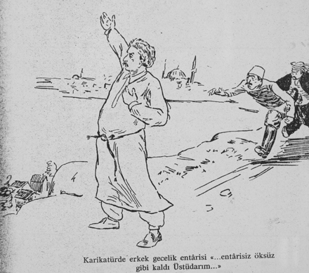
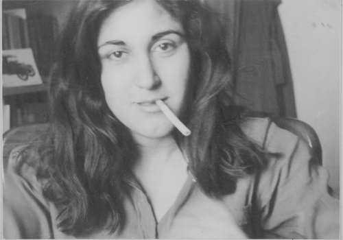

Sık sık gece yarısı Sultantepe’ye Mustafa Irgat, Nedim Gürsel, ya da Tanju Kurtarel uğrarlardı. Kapıyı çalmazlardı, camı tıklatırlardı.
Ece, Fatih Sultan Mehmet’in bir dergiden kestiği güllü resmine sık sık bakar, bıyık altından hınzırca gülümserdi. Ayrıca Ahmet Hamdi Tanpınar’ın bir romanındaki bir figürü için yazdığı “yalnızlığın terbiye ettiği bir adamdı” cümlesini çok severek tekrarlardı, bir de “Maveraünnehir nereye dökülür?”ü.
Ece’nin Sultantepe’deki evinde tek bir resim asılıydı. Bir mecmuadan kesilmiş, kontrplak üstüne yapıştırılmış. Renoir’ın tablosu, çıplak, tombul bir kız. Ece, “kaymaklar gibi kız,” derdi.
Radyosu var mıydı? Hatırlayamıyorum. Vapur sesi, öksürük sesi, yıkanırken dayak yiyen çocuk sesi, bozacı sesi... böyle sesler kalmış aklımın eski köşesinde.
En çok güldüğü şeylerden biri sözlükte “sikişmek” kelimesinin yanına parantez içinde düşülmüş nottu: ?Sikişmek (çok ayıp!)
Bir de Reşat Ekrem Koçu’nun Türk Giyim, Kuşam ve Süslenme Sözlüğü (1967) sayfa 104-105’teki entari yasağı bölümü:
1909’da ilk defa İstanbul’da, ve İstanbul’da Üsküdar’da erkekler için gecelik entarisiyle sokağa çıkma yasağı kondu. Aşağıdaki şirin yazı Hüseyin Suat Beyin Kalem isimli mizah mecmuasında gâveci zâlim takma adı ile bu yasak üzerine bir sohbet fıkrasıdır:
— Geçenlerde Üsküdar’da Sultantepesinde oturan dostlarımdan birine misâfir gittim. Niyetim birkaç günümü orada âsûde geçirmekti, fakat bu sene oranın neşvesini kaçıran bir mesele var: Entâri yasağı...
Entâriyi ancak yatağa girerken giyersem de başkalarını bu kılıkta sokakta seyretmesini pek severim. Meselâ, titiz ve temiz kimseler vardır ki entâriyi arkasına takunyalarını ayaklarına, ince yazlık hırkasını omuzuna alarak şöylece sandalyaya kurulurlar, tamâmiyle istirahatda bulunduklarını gösterecek bir tarzda öyle bir vaziyet alırlar ki insanın imreneceği gelir.

Reşat Ekrem Koçu, Türk Giyim, Kuşam ve Süslenme Sözlüğü, s. 104.
Üsküdar’da bu sene entârilerin pabucu dama atıldı, sokakta gördükleri entârililerden para cezâsı alıyorlar. Sultan tepesinde konu komşu birleşdiğimiz zaman ekser sohbetimiz entâriler üstüne oluyor. Kimi memnun, kimisi pür hiddet, bâzıları da: Bu âdetâ şahsi hürriyete müdâhaledir!.. diyor.
Sabaha karşı sokakta müdhiş bir gürültü ile uyandım: Tutun!.. Kaçıyor!.. Sağdan!.. Soldan!..
Ne oluyoruz diye pencereyi açtım. Baktım beyaz entârili, uzun boylu, baş açık, yalın ayak birisi yere ve gökyüzüne bir şeyler söyleyerek koşar gibi gidiyordu. Arkasında iki polis, jandarma, bir bekci tâkib ediyor ve dur emrine karşı o beyazlı heyûlâ muttasıl yürüyordu. Kulak verdim, manzum bir şey okuyordu:
Entâriyi inceden, kalından
Altmış sene giydi cismi zârım;
Entâri yasak olunca artık
Kayboldu benim de ihtiyârım.
Entâri içinde çünki geçdi
Ömrüm, bütün aşkı nevbahârım.
Mâtem tutuyor bu yıl dolabda
Yazlıklarım, âh penbezârım.
Entârisiz, aşksız, çiçeksiz
Öksüz gibi kaldı Üsküdarım!
Ölsem de yine gam yemem
Entârı Dede olur mezârım;
Kabrimde kemiklerim gülümser
Entâri giyerse türbedârım!...
Ece’nin Sultantepe’deki evinde koltuk yoktu. Sadece yatak yorgan. Ece, kutu, dolap, çekmece... gibi şeylerden nefret ederdi. Bir iki kalemi ya pencere kenarında ya da somya üzerinde dururdu.
Yemeği yerde yerdik. Çorba, kuru fasulye ekmek. Sabah çay, zeytin ekmek. Ana baba evinden bazen bir şeyler aşırıp getirirdim. Aşırdıklarımda meyve bol olurdu. Tabakta son bir meyve kalır, Ece, “Bak, kibarlıktan tabakta kalan son meyveyi kimse almaz, ama ben alır ve yerim,” derdi. Sonra da alır ve göstere göstere yerdi.
Sabahları o Cağaloğlu’na, ben de o dönemde öğrencisi olduğum tiyatro okuluna gitmek için Sultantepe merdivenlerinden Üsküdar’a inerdik. Merdivenler kışın buz tutardı. Manto ceket arası giysimizin önünü iliklemezdik. Soğuğa kafa tutardık. Ceketlerimiz arkamızda balon gibi şişerdi. Gülerdik halimize. Ece’nin bıyıkları o merdivenlerde buz tutardı. Ben yanlış tarafında yürürsem, “Bu kulağım sağır, canım, öbür tarafıma geç,” derdi. Bir gözü kör bir arkadaşı varmış. Durmadan yer değiştirirlermiş. Arkadaşının kör gözüyle Ece’nin sağır kulağı yolda yürüdüklerinde yan yana düşermiş. O nedenle Ece ve arkadaşı birbirlerini görmek ve duymak için durmadan yer değiştirirlermiş.
Ece, Şirket-i Hayriye vapurlarına biterdi:
Kalender ilk vapurumuzdur
Gidiyor yunuslarla yarışacak
Sultantepe’nin Üsküdar’a inen merdivenlerinin başında koca bir incir ağacı vardı. Yazdı. Ece, “Hadi bakalım, bir incir reçeli yap da, yiyelim,” dedi. İncir reçelinin erkek incir ağacındaki sert incirlerden yapıldığını o öğretmişti. İncirleri şekerle çok kaynattım. Karamela oldu. Tencereye yapıştı. Ece de, o tencereyi kafasının üzerinde ters çevirip, gülerek evin içinde dolaştı.
Yazın bir komşu evinin balkonundan uçurtma uçuruyordu. Orta yaşlı bir adamdı. Ece güldü. “Bak, adam, menilerini göğe uçuruyor Pazar günü”.
Gece mahalleden bozacı geçerdi. Ece karanlıkta bozacıya seslenir, boza alırdı. “Oh, oh!” diye içerdi.
Akşamüzerleri Ece’nin annesi, Mehmet’e “Mehmet, oğlum, Ece abin şimdi gelir, git bir ekmek alıver,” derdi. Mehmet de, “Peki, Ayşe teyze!” derdi. Ece gelince de annesi, “Ece, geldin mi oğlum?” diye her gün sorardı. Ece de, “Geldim anne!” derdi. Ece, annelerin çocuklarını bakkala gönderirken pencereden son anda “Tuz da getir” diye seslenmelerine bayılırdı.

Sevgi Özdamar “Ece Ayhan’la Sultantepe’de oturduğumuz yıllarda... Hüseyin Tüzün annemin evinde çektiydi.”
Ece’nin annesi sarışın, zayıf, güzel bir kadındı. Çok az konuşurdu. Sesi sanki karnından gelirdi. Birlikte Üsküdar Hamamına giderdik. Yıkanırdık. Ece, pazarları evde su kaynatır, kovadaki suyu bir defada kafasına boşaltır, yıkanmış olurdu. Hızla boşalan su, eğik banyodan koridora yayılırdı. Ece süpürgeyle suları banyoya geri süpürürdü.
Bir gün annesini doktora götürmemi rica etti. İlaç parası verdi. Doktor da kadıncağıza ilaç verdi. Parayı verdik ilaçları aldık. Yüz lira tuttu. Çok para. Akşam Ece eve geldi. İlaçların tarifelerini tek tek okudu. Sonra götürdü tüm ilaçları Üsküdar’dan denize attı.
Geceleri bazen odamın kapısını birden bire açar, bacaklarıma bakar, at gibi kişner, kalın bir sesle “mm” der, çapkınlık taslar, sonra bıyık altından gülüp odanın kapısını kapatır giderdi. Severdi beni, “Karaşın” derdi. Yolda iki erkek çocuğun arasında cesur cesur yürüyen bir kız çocuğuna rastgelmiştik. “Mutlaka onun da adı Sevgi,” demişti Ece.
Beni Memet Fuat’ın “de yayınevi”ne götürmüştü. Memet Fuat’ı severdi, “Aslan koca kafa” derdi. Sevdiği bir İtalyan artist vardı, Stefania Sandrelli. “O da senin gibi bıyıklı bir kız,” derdi.
O zamanlar Hakkâri’de köylüler açlıktan kırılıyor diye bir haber okuduk. Dağlardan inen kar, köylerle şehir arasındaki yolları mahvetmiş, köylerde insanlar açlıktan kırılıyormuş. Helikopterlerle oralara atılan yiyecek de asker ve sivil bürokratlar tarafından iç ediliyormuş diye bir haber. Ben, tiyatro okulundan bir arkadaşımla babamdan 300 lira alıp, önce otobüsler, sonra da kamyonlar üstünde Hakkâri’ye kadar otostopla aç kalan köylülerle röportaj yapmaya gittim. Ünlü Zap Suyu orada. O zamanlar Zap Suyu’na daha köprü yapılmamıştı. Peşimizde üçer sivil polisle oralardaki köylülerle konuştuk.
Ece, bu seyahate “Kendi Kendinin Terzisi Bir Kambur” şiirinde yer verdi:
Giderler harçlıklarına eserse
Haliç vapurlarıyla Zap Suyu’na
Ece, kedi severdi. Çok küçük bir kedisi vardı Sultantepe’de, ona “Hanımkız” derdi. Kedi çok erken hamile kaldı, yani daha çocukken. Ece, “genç düzdüler,” dedi. Sokakta bana kedileri gösterir, “Bak, İstanbul’un kedileri önce sağa sonra sola bakıp öyle geçer karşıdan karşıya” derdi. Birkaç kez de Üsküdar’da, birlikte arabalı vapurdan çıktıktan sonra sağda, Mimar Sinan’ın yaptığı harika küçük caminin yanındaki mezarlığa gittik. Oraya kediler getirilir, azad edilirdi. Bu kedilerin çoğunun bir gözü kör, kulakları kanlı, kuyrukları kesik, burunları yarıktı. Açtılar, kavga çıkarırlardı. Mezarlıkta kedi kavgası olurdu aralarında. “Yalnız kuşlar fakir olmaz, kediler de olur, olmaz mı?”
Cihat Burak’ı çok severdi. Cihat Burak öğle paydoslarında gider kedileri beslermiş galiba Sultanahmet’te, Adliye Sarayı’nın ordaki parkta. Ece’nin “genç düzdüler” dediği Hanımkız bir sabah battaniyemi çekip uyandırdı. Zavallı nasıl doğurulur, bilmiyordu. Gözlerine bakıp durmadan konuştum. Kedi de benim gözlerime bakıyordu. Ben konuştukça o dört beş yavru çıkardı. Birincisi ölü doğdu. Onu yedi.
Hanımkız’ın daha sonraki yıllarda doğurduğu bir yavrusunu, Ece bana verdi. O sıralar altı erkekle bir komün kurmuşuz, sinema komünü. Galiba 1971 başları, İngiliz Konsolosluğu’nun karşısında bir apartmanda oturuyoruz. Alt katta Rum terziler. Üst katta orospular. Dergi çıkarılıyor: Genç Sinema, Çağdaş Sinema. Öğrenci-işçi eylemlerinde çekilen 16 milimetrelik filimler... Fransız sinemacıları da bu evde kalıyor. Ortak kitaplar okunuyor. Kazanılan bütün paralar film için kullanılıyor. Et yenmiyor. Ayakkabı alınmıyor.
Deniz Gezmiş’in yakalandığı günlerde polis geldi, bizi Sansaryan Hana, 6. Şube’ye götürdü. Giderken Ece’nin verdiği kedi yavrusunu kapıcıya emanet ettim. Polis bizi bıraktığında kediyi kapıcıya sordum, “Çıktı gitti, o çoktan kayboldu!” dedi. Ece’nin verdiği kedi yavrusu ve bana (Ankara’ya) yazdığı mektupları aynı gün, aynı polisler yüzünden kayboldu.
Mektuplar:
Tiyatro okulunu bitirip oyuncu olmuştum. Sermet Çağan beni Brecht’in Carrar Ana’nın Silahları’nda Carrar Ana’yı oynatmak için Ankara’ya götürdüğünde annem-babamla Ece Ayhan, beni ve Sermet Çağan’ı Haydarpaşa’dan trene bindirdiler. Trende rakı içtik. Sermet Çağan’ı severdim. Ece, beni, yazdığı mektupla Ankara’daki arkadaşlarına emanet etti. Oğuz, soyadlarını unuttum. Belki Onaran. Kumral, güzel, zarif bir insandı. Karısı Filiz (takma adla Henry Miller çeviriyordu) güzel bir kadındı. Ankara’da beni evlerinde yatırdılar. Harika insanlardı. O evde en çok barbunya pilakisi pişirdim. Filiz, pişirdiğim pilakilere bayılırdı.
Yusuf Atılgan’ı onlarda tanıdım. Yusuf Atılgan o evde arada bir gelir kalır, salonda yer yatağında yatardı. Güzel, gri bir adamdı. Sessiz pabuçları vardı. Çok konuşmazdı. Ben yatak çarşaflarımı yıkayınca “Siz saygılı bir insansınız, herkes gelir bu evde kalır ama kimse çarşafını yıkamaz,” demişti. Sevdiği bir güzel kadın vardı. İkisi de yer yatağında yatar, gece konuşurlardı. Seslerini çok severdim. Sanki ayla konuşurlardı.
Ece, bana, o eve, Ankara’ya sıkça mektup yazar, sonunu hep,
hoş çakal
hoş tilki,
diye bitirirdi. İşte o mektuplar polis İstanbul’daki evde arama yaptığında, polis arşivine düştü, o gün bugündür kayıp. Kedisinin yavrusu gibi. Kedi ölmüştür çoktan. Biz genç sinemacıları polis toplayıp Sansaryan Hana götürünce Ece’yi bir arkadaş haberdar ediyor. Gitsin Rus filmlerinin bobinlerini alsın saklasın, diye. Bu bobinler anne babamın Fener Yolu’ndaki evlerinin kömürlüğünde duruyordu. Bunlar galiba Potemkin Zırhlısı, Korkunç İvan... falandı. Ece bize gidip annemden filmleri alıyor. Bir filede Üsküdar’a kadar taşıyor. Orda bobinleri denize atıyor.
Ankara’da tiyatroda oynarken öldürülen bir genç için Anıtkabir’e yürüyüş düzenlenmişti. Bir yığın insan yürüyoruz. Öldürülen gencin annesi başörtülü bir kadıncağızdı. Adı da İnsaf Ana. Ece bu isme bitmişti. Ben İnsaf Ana’nın yanına gittim, birlikte yürürken “Oğlumun emeğini eline verdiler” dedi. Bunu Ece’ye yazdım. Ece de Devlet ve Tabiat’ta (s. 21) İnsaf Ana’nın bu cümlesini şiirine aldı:
O günden böyle asker kaputu giyip gizli bir geyik
Yavrusu emziren gece çamaşırcısı anası yazdırmıştır:
Ah ki oğlumun emeğini eline verdiler
Ece, 70’li yıllarda Cağaloğlu’nda bir ansiklopedide çalışıyordu. Galiba İstanbul Ansiklopedisi’ydi. Fotoğrafların alt yazılarını o yazacaktı. Savaş fotoğrafları. Cağoloğlu Yokuşu’nu çıkarken, o yokuşta öldürülen Osmanlı politikacılarını bana anlatır, cinayet yerlerini gösterirdi. “Cağaloğlu Yokuşu’na ayağın alışsın, Sevgi,” derdi. “Bak Yaşar Kemal senin için ne diyor: ‘Şu Cağoloğlu Yokuşu’nu tırmanan en cesur kız’. Her şeyi kurcala, emi canım?”
Oynadığım tiyatro kapatıldı, yönetmen hapse atıldı. Ece, “At üzerinde gidiyoruz, eyer bir o tarafa döner bir bu tarafa,” dedi. Bana Cağaloğlu’nda iş buldu. İstanbul Ansiklopedisi için malul-gazilerin fotoğraflarını toplamamı istedi. Düşkünler yurdunda, gazilerin toplandığı yerlerde ihtiyarlarla konuşup ellerindeki tek tük fotoğraflarını ansiklopedinin arşivi için topladım. Bu fotoğrafların, kullanıldıktan sonra yerlerine iadesinin sorumluluğu Mustafa Kemal Ağaoğlu’na aitti. Bugün hâlâ içimde sıkıntıdır. Acaba bu soluk, küçük fotoğraflar sahiplerine ulaştı mı? Ece, bir ara, “Ulaştırmaz!” demişti.
Ece, bana “Gazetelere girip çıkmanı istiyorum, Cağaloğlu’nda” derdi. Ama bazı gazetecilere “devletten geçinmeliler” derdi. “Bu herifler kimse birbirinin arkasından konuşamasın diye gittikleri meyhanede hesabı aynı anda ödeyip, aynı anda ayağa kalkıp, yan yana kapıdan çıkar, evlere dağılırlar.” Sonra kıkır kıkır gülerdi.
Dönemin etkili sağcı gazetesinde başyazarlık yapan gazeteci bir hanım, erkek bir gazeteciyle, köşesinde ağız dalaşı yapıyormuş, “O karı, o herifle [.....] istiyor. Onun için politik ağız dalaşı yapıyor,” demişti Ece, bir konuşmamızda. Bu etkili gazeteci hanımı hiç sevmezdi, “Porno yıldızı olsaydı da milletin başına ekşimeseydi...” filan derdi.
Cağaloğlu’na tırmanırken “Sirkeci Türkiye’nin başkenti,” derdi. Sirkeci’de orospulara, askerlere rastlardık. Bu fakir orospular Sirkeci garının karşı kaldırımında dolanırlar, bir adam buldular mı onlar önden, adam iki metre ardından yokuşu tırmanmaya başlarlardı. Oteller yokuş yukarı. Bu kadınlar ramazanda başlarını örterlerdi. Ece, “hayat kadını” sözüne biterdi.
“Galatasaray’da duvardaki yazılara bak:” derdi “Buraya lütfen işemeyiniz. Duvar yazısı çok kibar. Kasımpaşa’ya indikçe dil değişir: Buraya işeyenin anasını avradını yedi sülalesini ecdadını sikerim.?”
İstanbul’da bir Rum şaraphanesinin duvarına asılı sekiz Atatürk resmiyle bir Zübeyde Hanım resmini gören Ece, “Azınlık kendini savunuyor!” demişti.
O yıllarda İlhan Usmanbaş, Sevim Burak, Cihat Burak der dururdu. Bayılıyordu onlara: Dinar Bandosu. Bir de Meydan Larousse’ta bir masada karşı karşıya çalıştığı çok zeki bayana bayılırdı. Bana, “Bir gün Larousse’a uğra!” dedi. Bu çok özel bayanı görmem için. Güzel bir kadındı. Zarifti. Adı galiba Keyise İdalı idi. Ece, Keyise İdalı için “Ben hayatımda böyle birikimi olan bir kadın görmedim,” derdi.
Memet Fuat’ın voleybol antrenörlüğü yaptığı Altunizade Spor Kulübü’nün tiyatro salonunda bir ramazan ayı boyunca kantolar söyleyip orta oyununda oynarken Ece her gece geldi. Bir seferinde sinemacı Metin Erksan’ı da alıp getirdi. “Gel sana yaşayan en iyi kantocuyu göstereyim Metin!” demiş, alıp getirmiş.
Kanto geceleri enfes geçerdi. Kantolar başlamadan önce yemekler yenir, sokakta ellerde fener, davul eşliğinde maniler söylenerek tiyatroya kadar gelinirdi. Mahallenin öğretmeni, alkolik entelektüeli, Üsküdar’ın Aygaz Bayii... hepsi o gecelerde roller almıştı. Ece, çok sevdiği Kantocu Peruz’a istinaden bana da Peruz derdi.
1972-73’lerde, tam hatırlayamıyorum, Ece, annesi ve Mehmet’le Çengelköy’de bir evde oturmaya başladı. Ben de Kuzguncuk ormanında, güzel, tahta bir evde oturuyorum o sıra. Otobüse atlar, Çengel’de[1] iner, meşhur çınar ağacının altında Ece’yle buluşurduk. Tek bir çayla dört beş saat otururduk. Paramız yoktu. Hep Ece konuşurdu. Ben sadece dinlerdim. Anlattıklarının arasında bir virgül kadar bile bir boşluk yoktu ki konuşayım.
Ece’nin anlattıklarını hep kitaplarında bulurdum sonraları. Konuşuyor sanırdım, meğerse yazarmış. Yazmayacağı şeyi konuşmazdı. Sanki ağzından çıkan kelime nehirleri sonra kitaplarında denize dökülürdü:
Hakkın ve hukukun her anlamıyla bulunmadığı bir kötülük toplumunda yaşasak da... Karakamunun çiçeği... Devletin şairlerle arası hep açıktır... Askeri şiir hariç şiir resmi kültürde yer almaz... Yapayalnızlık, ıssızlık göze alınmadan... Babalar babalıktan sessizce çekilmesini bilmelidir... Ateş düştüğü yeri yakar, acı da paylaşılmaz... Kendi adıyla çalışan kadınlar... İsmet Özel Cumhuriyet’le yaralanmış... Merak ve kuşku her şeyin anababası... Her şeyden kuşkulan... Gerçek marjinaller mülkiyetle ilişkiye girmezler...